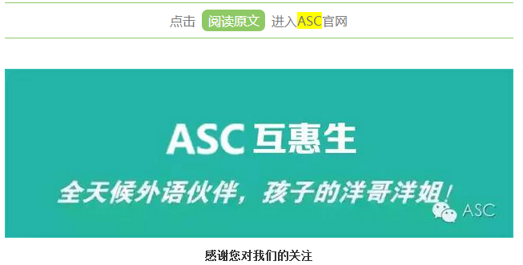

互惠动态
|
|
白岩松：教会孩子“输”
如果孩子半夜看球您会怎么办？
您会对孩子的成绩做要求吗？
孩子犯错后，您是不是担心万分？
怎样才能教育好孩子是各位家长穷其一生探索的问题。
“如果成长永远是一个模式，顺理成章，阳光灿烂，洁白无瑕，那不是成长，那是不合格的文学创作。成长是真实、立体的，也会让人有一些担心，但不出格，守住底线就行。”政协委员、白岩松结合其自身成长及教子经历时却这样说。
其实，白岩松有一个虚岁19岁的儿子白清扬，都说“虎父无犬子”，白清扬也继承了爸爸很多的爱好和基因。父子俩都喜欢足球，是铁杆球迷，白清扬还是校足球队的队长;父子俩都很喜欢摇滚乐、都爱好写作，白清扬曾在全国性的作文大赛中获奖，去年还用笔名出版了自己的第一部小说。
那么，身为爸爸的白岩松是怎样培养自己的孩子的呢？
爱孩子，就让他爱上阅读吧！
富起来的中国人，吃饱了穿暖了的中国人，不会把全部注意力都放在物质的获得上。当我们已在物质方面有了巨大进步的时候，也许一个真正与精神、与灵魂、与信仰有关的中国人追求的时代也就真正开始了。
好多人沮丧地说，在中国读书的好时代过去了。我想说：不，它可能才刚刚开始。
早有调查称，人们读书和知识获取的水平和你的工资收入是成正比的，我想只有你读的书足够多了，你才会更有创意，才会更自信，你才会更有底气，才能获取更多的物质回报。但是这还不是最重要的。书读得多了，你在情感方面会是一个充沛的、获益很多的人，你的依靠会更充实，更重要的是在读书中会寻找到我们的信仰和精神支柱。中国人的信仰千百年来并不是仅仅靠宗教来支撑的，它就在唐诗宋词当中，在爷爷姥姥讲给你的故事里，在《三国演义》里，在《红楼梦》里，在《西游记》里，在无数的经典书籍当中，至今依然被文人用那种美丽的方块字写在字里行间。
有数据显示，10岁-19岁之间的青少年读书最多，可是那些书有相当大的比例不是他们爱读的书,而是和当下的考试等有关系的书。因为读功利的书，而没有养成终生读书的习惯。
20岁-29岁，为名利忙,事业压力大,没有时间读书。40岁-49岁,进入读书最少的时候，很多人觉得人生走到这个阶段,已经定型了,不再需要读书。到了老年，读书开始增多。因为离开事业一线，不再为名利权利奔忙,被动性地靠近生命的真谛，重新捡起书籍，这时阅读回到了它最大的本质，那就是乐趣,无用为有用，滋补人生。
这种状况急需改变，要让年轻人享受书籍的乐趣,不仅仅为功利目的而读书。要在青少年时期把读书培养成为一生的习惯和最好的生活方式。
兴趣是最好的老师
对于孩子的兴趣，我从不去刻意地培养，因为“只有让孩子自由，才能成长得更快。”如今，孩子的兴趣、爱好基本上都是“耳濡目染”的结果，我喜欢看球，孩子也爱看球，我是阿根廷的球迷，孩子小名则叫巴蒂。
甚至，从某种意义上来说，我对孩子兴趣的支持近乎于“纵容”。曾有一次，在第二天有课的情况下，我同意孩子在头一天半夜看球，结果是孩子次日放学回家骄傲地告诉我：“我们班没有任何人敢这样。”如今，孩子已经晋升为一支民间球队的队长，我对此有说不出的“开心”。
同样地，我并不认为“看球是瞎看，没啥用”，这对孩子的成长很重要。举个例子，孩子最喜欢的是曼城队，有一场事关曼城队夺冠的比赛，同样是在夜里看。在比赛接近尾声时曼城队还是1∶2落后，但就在最后的四五分钟，奇迹出现了，曼城补时3分钟连入两球逆转，夺冠！
请问在人生中，哪有这么好的机会，让孩子感受到不放弃，结果就可能会发生改变。课堂上给不了。因此，即便是在那天，孩子一直到两三点还没睡，但我相信，孩子第二天上课一定比往常更认真。
我一直相信这样一句话：阅读打开世界，但是运动让人更早地体验到分享、团队精神以及胜败的意义。
教会孩子“输”
这是中国人很缺乏的一种教育。在我们的教育体系中，孩子从小到大，什么时候学习过如何体面并且有尊严地输？
其实老祖宗早已明白这个道理，说“人生不如意事十有八九”。既然不如意事十有八九，为什么我们从来不教“十有八九”时的心态和应对能力？十之一二的成功，被看得极其重要；十之八九的挫折，也被放大到无以复加。
回头看中国历史，包括世界历史，想想看，失败很可怕吗？中国有无数的历史人物，之所以伟大，是因为失败，而不是因为成功。
岳飞是因为成功才伟大吗？如果从我们现在的“成功学”角度来看，岳飞很失败。不管你仗打得怎么样，被人家N道金字令牌召回，最后还给办了，在当时的社会来说，他是一个失败者。当时的成功者是谁？是秦桧。可是后来呢？秦桧在西湖边上已经跪了多少年，但岳飞是我们心目当中的英雄，对吗？
项羽是成功者吗？作为一个男人，一个将领，项羽已经失败到无以复加的地步了吧？都霸王别姬了。但是他仍然以英雄的形象，存留于中国的戏剧故事和百姓谈论当中。反倒是“成功者”刘邦，会让我们在内心里，产生某种不屑或者不那么喜欢的感觉。
林则徐的人生成功吗？大家只记住了他成功那一点——虎门销烟，但却不知道在很多“妥协派”的压力之下，一年之后林则徐被去职。从当时的官场角度来说，他成功吗？一点儿也不。失败的意义比成功大，或者说有一种成功必须是以失败作为助推力的。
为什么要补上失败这一课？不仅仅是因为人生不如意事十有八九，更因为人从出生开始，就是一条单行线，直奔死亡而去。就算你赢了全世界，也赢不了这个结果。死亡，是一个最大的“失败”，你应该怎么去面对它？
做出决定，往往意味着一种变革，人生何尝不是如此呢？每当失败与挫折来临，你应该怀着好奇心去看待它，试图弄明白它的目的：难道这是一次提醒？难道我应该做出一个更有利的决定？
扫下二维码有更多精彩分享！！！ 
